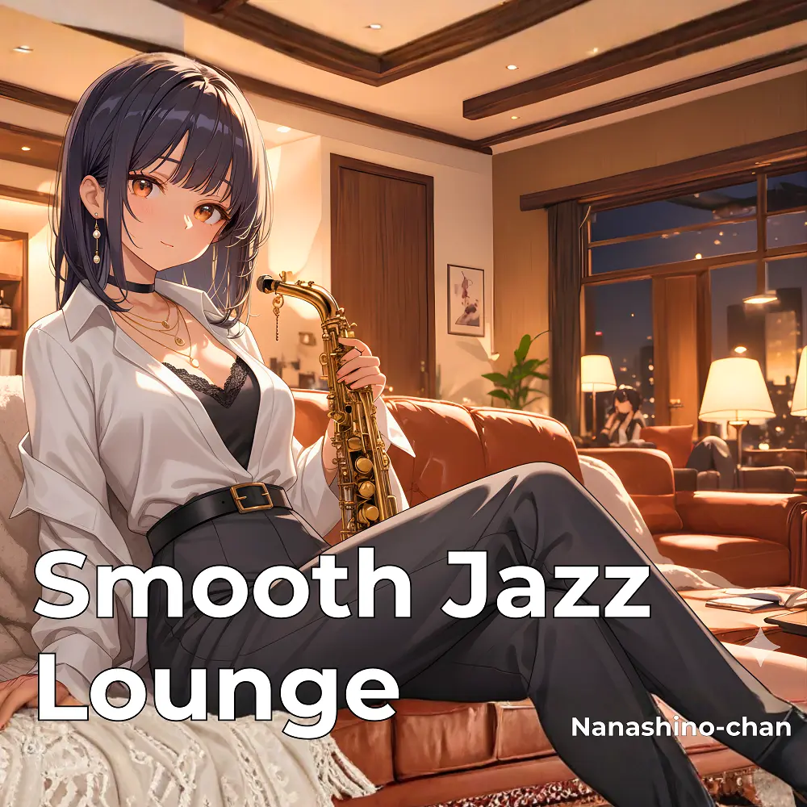

Smooth Jazz · Lounge
Smooth Jazz Lounge: Relaxing Evening Vibes
Nanashino-chan
Explore Smooth Jazz Lounge: Relaxing Evening Vibes by Nanashino-chan: 19 instrumental tracks spanning Smooth Jazz / Lounge. Start with Evening Breeze / Smooth Reflections, preview the collection and find your favorites on streaming services.
2026-03-27 · Released · 19 tracks · Instrumental
Preview the album
The jacket stays here until you choose a track. Playback uses YouTube.
YOUTUBE PREVIEW
Choose a track to listen
The jacket stays here until you choose a track. Playback uses YouTube.
If playback is unavailable, open the album or track on the streaming service.
Find this album on streaming services
Links marked “search” open search results. Select the album or track on the service.
Track list 19
- 01Evening Breeze
- 02Smooth Reflections
- 03Quiet Night Stroll
- 04Soft Echoes
- 05Serene Moments
- 06Velvet Sunset
- 07Dreamy Waves
- 08Gentle Flow
- 09Golden Hour Groove
- 10Chill Horizon
- 11Twilight Serenade
- 12Sax in the City
- 13Midnight Lounge
- 14Moonlit Melodies
- 15Nightfall Vibes
- 16Evening Reverie
- 17Calm Afterglow
- 18Deep Relaxation
- 19Closing Chill
Find a sound for your next post
Copy “Nanashino-chan + track title” and paste it into your social app’s music search. Availability depends on your region and account. Copying the name does not grant usage rights.